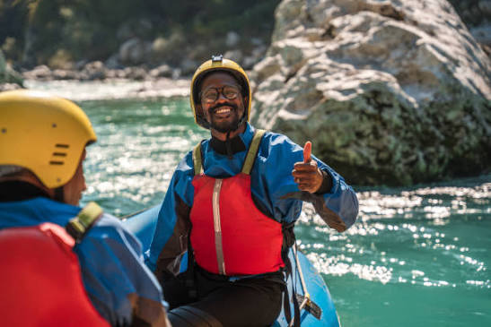
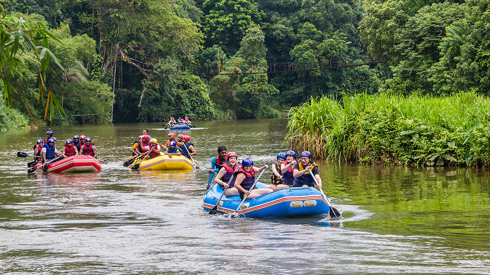

Nossa missão é proporcionar aventuras inesquecíveis na natureza com total segurança e respeito ao meio ambiente. Prepare-se para encontrar alegria com seus amigos e familiares nesse ambiente agradável e divertido.



Nossa missão é proporcionar aventuras inesquecíveis na natureza com total segurança e respeito ao meio ambiente. Prepare-se para encontrar alegria com seus amigos e familiares nesse ambiente agradável e divertido.
Fundada em 1998 por um grupo de amigos apaixonados por esportes radicais e preservação ambiental, a White Water Rafting nasceu do desejo de compartilhar as belezas escondidas do Vale das Corredeiras. No início, contávamos apenas com dois botes infláveis e uma pequena cabana de madeira às margens do rio, guiando aventureiros locais pelos trechos mais emocionantes da região.